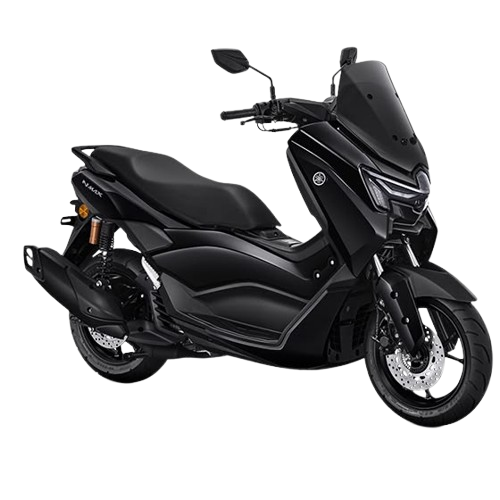
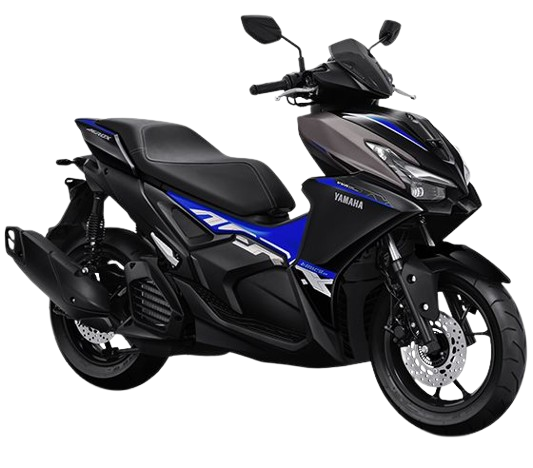
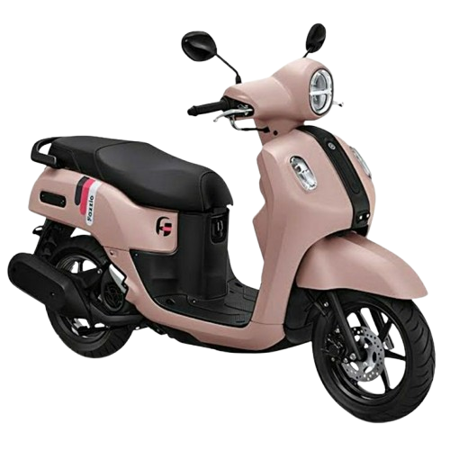
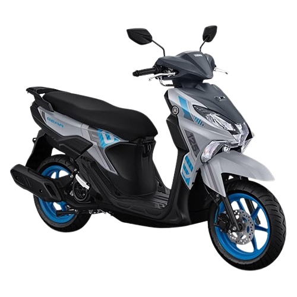

YAMAHA MOTOR
Pilihan Motor Yamaha
Temukan motor Yamaha yang sesuai dengan kebutuhan dan gaya berkendara kamu.

MAXI YAMAHA
Yamaha NMAX NEO
Skutik premium dengan desain elegan dan nyaman untuk perjalanan harian.
Tanya Harga
SPORT SCOOTER
Yamaha Aerox Alpha
Motor sporty dengan desain agresif untuk kamu yang suka tampil beda.
Tanya Harga
CLASSY YAMAHA
Yamaha Fazzio Hybrid Neo
Desain stylish dan modern untuk menemani aktivitas sehari-hari.
Tanya Harga
MATIC
Yamaha G-Ultima Hybrid Solid
Praktis, tangguh, dan cocok untuk kebutuhan mobilitas sehari-hari.
Tanya Harga